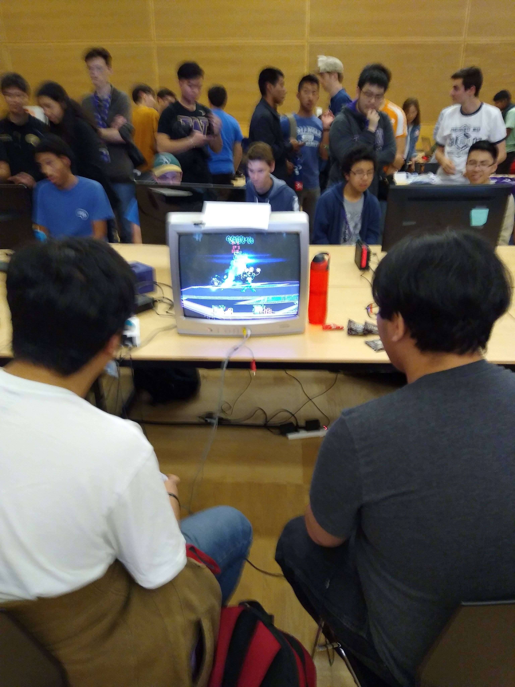
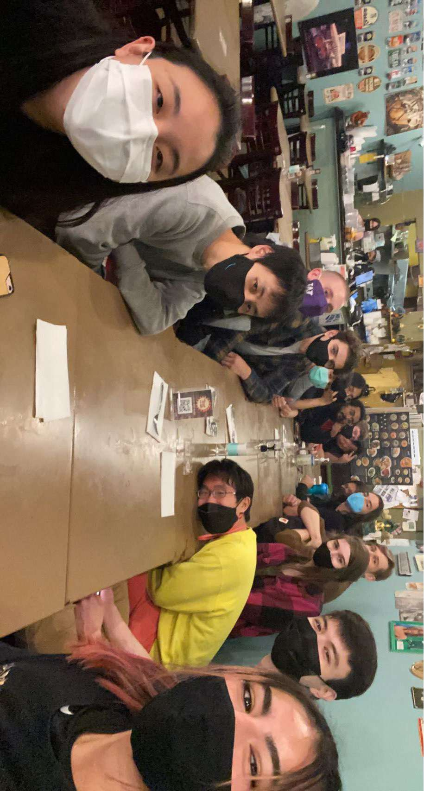
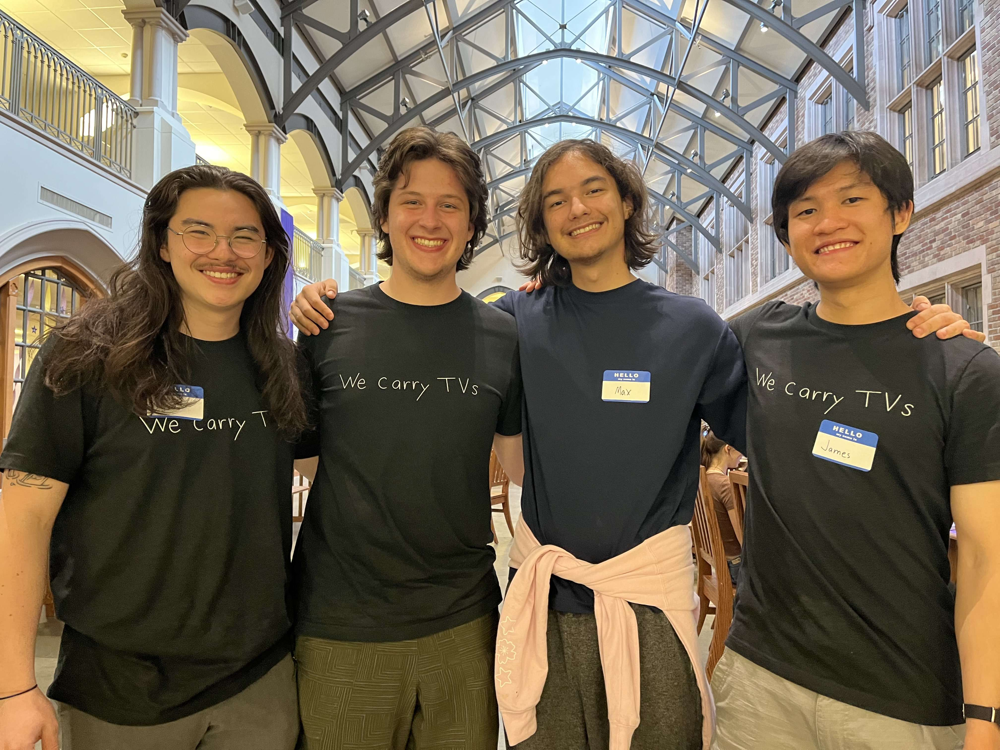

My first few days at UW were overwhelming; I met more new people in about a week than I had in the past several years. I was rather disappointed that I hadn't found anyone to play my favorite video game with though. I had been easily able to find other people at UW to play other versions of Super Smash Bros. with, but I hadn't run into anyone who really seemed interested in improving at the game, and I also hadn't found a single person was into Project M (or Project+, the more up-to-date successor to Project M), the same version I had played and come to love when I was in high school. Eventually, after asking around in a few large Discord servers, I was directed to Vy Nguyen, the current treasurer and Project+ tournament organizer at UW Smash, and later met him at UW Hub Crawl.
A few weeks after that, I entered my first Project+ tournament at UW Smash. While I did manage to win one set, I soon realized I had a lot to learn still despite having already played with my friends for four years.
After finding the club during my first quarter, I continued attending for the next few months until COVID showed up and quarantine happened. While some other local Super Smash Bros. continued to run events online, the demand within UW Smash wasn't enough for us to do the same, so the club went dormant for the next year and a half. As the return to in-person school in Autumn 2021 drew near, Vy reached out to me about taking over his previous position as a club officer, since he had graduated the prior spring, and so I started getting involved with handling the club's finances and running Project+ events.
Up until this point in time, I had pretty much exclusively played Project+, occasionally trying Melee (the main game at UW Smash) but then becoming frustrated with the marginally stricter control scheme. As a result, Vy was the only member of the club I had actually met (along with some members of the Greater Seattle Project+ scene that occasionally attended our tournaments), and since he had graduated the previous spring, I was left as the only Project+ player regularly attending the club. I did stubbornly continue playing the game by myself in the corner at first, but I soon realized that I enjoyed the club because I got to play the game with other people. Unfortunately (or so it seemed at the time), everyone else at the club played Melee. This meant I had to start trying to really learn Melee.
Super Smash Bros. Melee is an extremely technical game, which can make it extremely difficult to learn at first. On top of this, the differences between the two versions for Ganondorf, my main character in Project+, made him un-enjoyable for me to play in Melee, which meant I had to learn an entirely new character in a new game. I had a lot of trouble early on, being unable to do seemingly basic things such as run with my character, but with a bit of serious practice the game became more approachable, and I realized that many of the other newer players at my level were struggling with similar aspects of the game. Today, while I still consider myself a Project+ specialist, I am comfortable playing Melee as well, and have become better friends with the other UW Smash officers and club members.
  